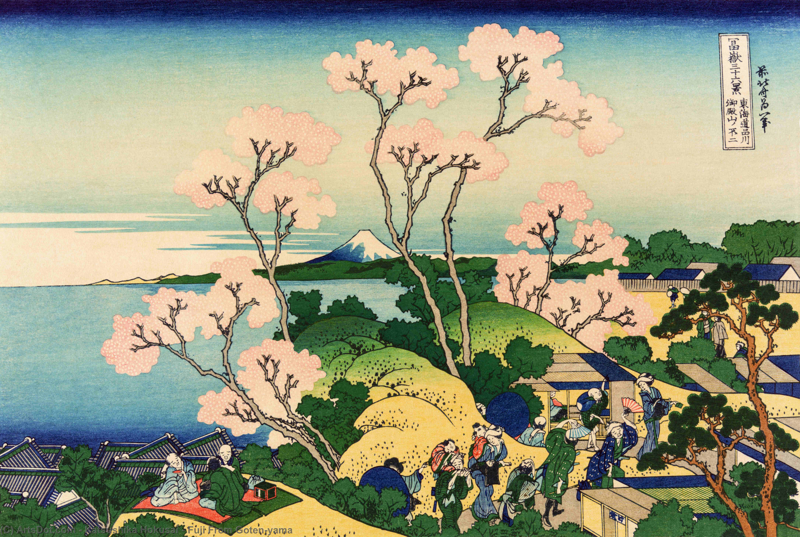
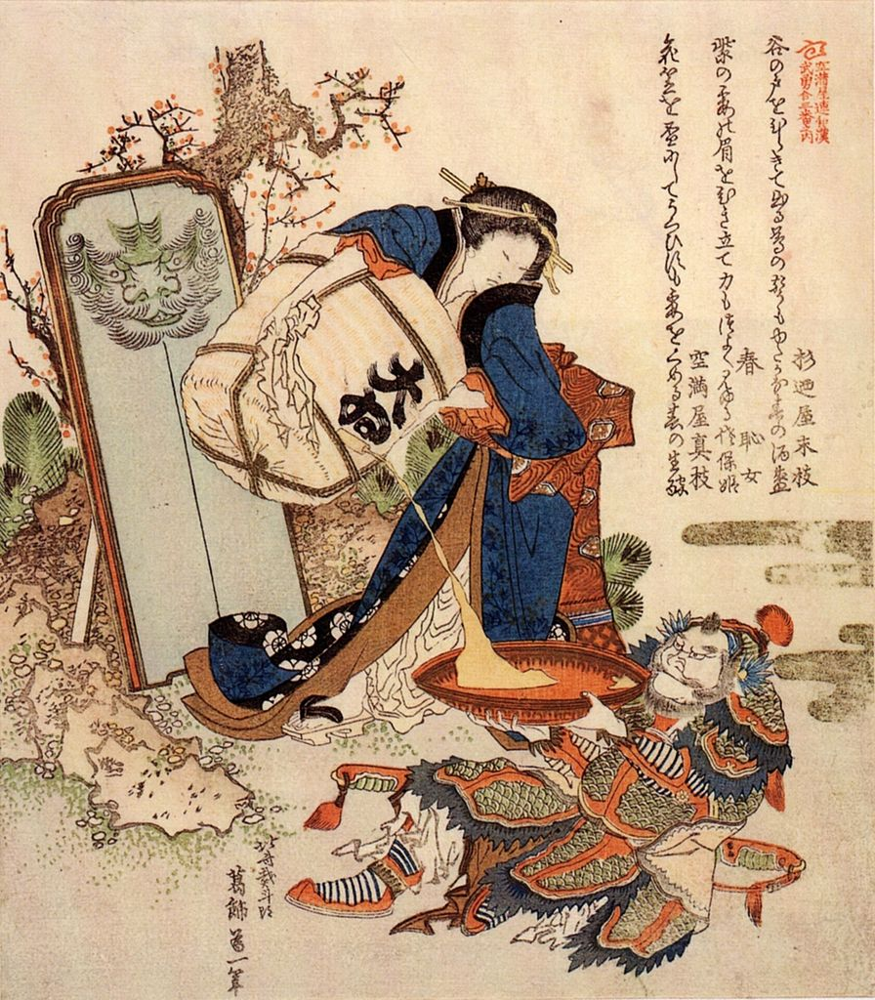
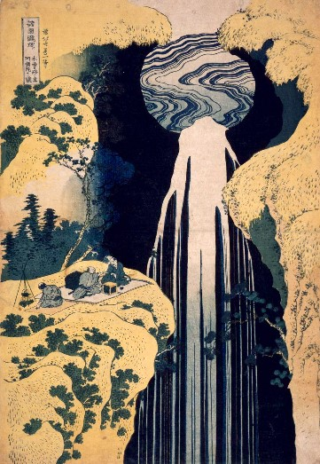
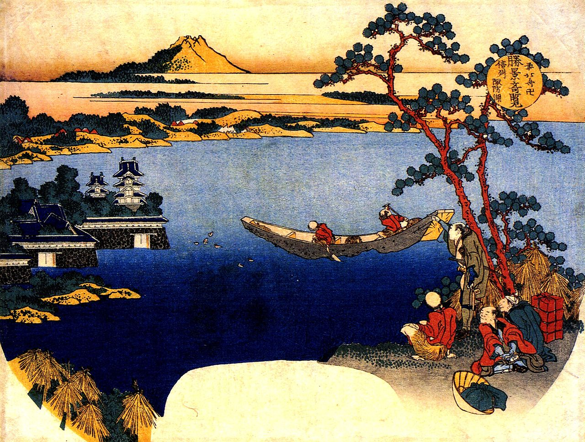

Hokusai is probably Japan's most famous artist. We know him best from the image of The Wave, as we saw in the art gallery Woodblock Prints.

While Hokusai was individually skilled, he is effectively the culmination of Japanese art progression: prints like this one had been made for a long time before Hokusai arrived on the scene.
He was able to copy and progress the artstyle of his predecessors

Seems like a still life. The fan has a depiction of mount Fuji; one of Hokusai's most depicted subjects.
Both he and Hiroshige (2nd most famous woodblock printer) were fond of nature and folklore - things that mount Fuji exhibits.

Gradients and particular colours are rather hard to print with the woodblock technique.
Because of advancements in the manual printing form, works like this one (with vivid colors and gradients) could be distributed all across Japan.
Hokusai would have called this self-portrait a 'manga', or a simple figure.
It is indeed the question in what degree artists like Hokusai have inspired Japanese art up untill today; and if current-day manga has any roots in the 'manga figures' and woodblock prints of Hokusai and his colleagues.